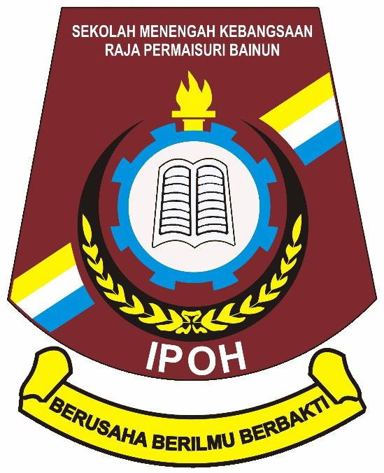

Academic History
School
My school years were filled with academic growth and personal development. I participated in various extracurricular activities, which helped me develop important skills like teamwork and leadership.
- Achievements : Excelled in Mathematics, Computer Science, and English, also consistently achieving top scores in those subjects.
- Favorite Subjects : Mathematics, Physics, English.
- Notable Extracurricular Activities : Member of the school's sport club, where we compete for the top athlete in all competitions nationally.
UiTM
At UiTM, I pursued my passion for technology through my studies in Information Science. My academic journey has been shaped by both challenging coursework and involvement in various clubs and events.
- Program of Study : Currently pursuing a Diploma in Information Management (2022-Present)
- Courses Taken : Data Structures, Web Development, Database Management, Artificial Intelligence, Archive Management, File Management.
- Academic Awards : Dean's List (2023, 2024).
- Extracurricular Activities: Active participant in the university events and programs.
Education Details
| Institution | Program | Year | Achievements |
|---|---|---|---|
| SK Kompleks KLIA | Primary Education | 2011 - 2016 | Head of The Library Prefect (2015, 2016), Top Scorer in Mathematics (2016), Top Scorer in English (2016), MSSD Sprint 100m (2016), MSSD Sprint 200m (2016) |
| SM Agama Sains Kuala Pilah, Negeri Sembilan | Secondary Education (lower form) | 2017 - 2019 | Public Speaking Negeri Sembilan (2018), Top Scorer in English (2018, 2019), MSSD Volleyball (2018), MSSN Sprint 100m (2019), MSSN Sprint 200m (2019), MSSN Sprint 4x100 (2019), Science Quiz Award (2019), International Marathon 20KM (2019), State Sprint 400m (2019), JOTA Pengakap Kebangsaan (2019) |
|  SMK Raja Permaisuri Bainun, Ipoh, Perak | Secondary Education (higher form) | 2020 - 2022 | Second-in-command School Prefect (2020), National Mathematics Quizz Online (2021), Head of The Sport Department Prefect (2021,2022) |
 UiTM Cawangan Kedah, Kampus Sungai Petani
UiTM Cawangan Kedah, Kampus Sungai Petani
|
Diploma in Computer Science | 2022 - Present | Asean Community Student Association (ACSA) Development and Entrepreneurship Exco (2022, 2023), Jawatankuasa Pemilihan Jawatankuasa Perwakilan Pelajar UiTM (2022, 2023), Hari Sukan Negara Athlete (2023), Sekretariat Parlimen Mahasiswa UiTM (2023, 2024), ACSA Interim Vice President (2024), ACSA Vice Secretary (2024) |